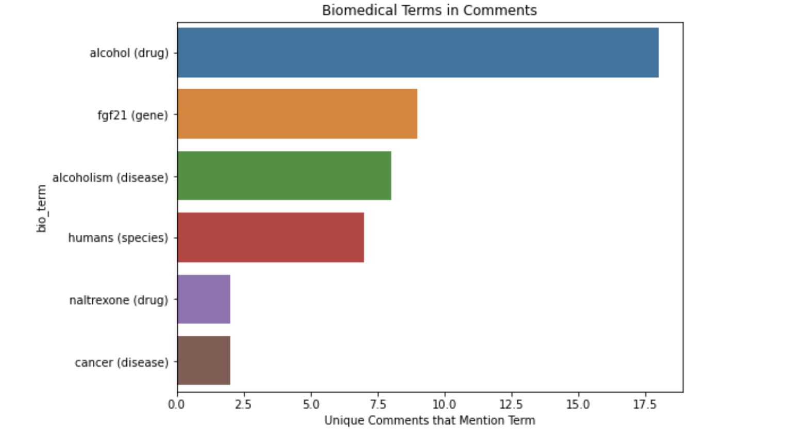
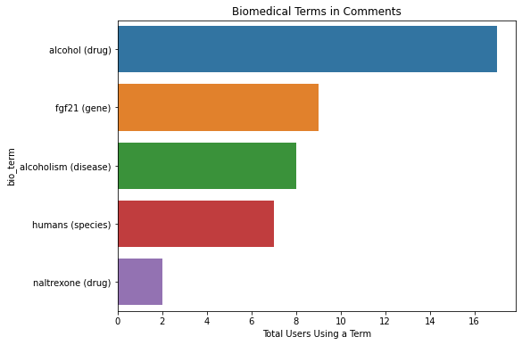

from biobert_bern.biobertApi import * #this grabs all functions from biobertApi .py fileLess than 5k characters. Only 1 block necessary.Here we’ll try using elements from the biobertApi module to label biomedical terms in the comments section of a Found My Fitness youtube video that looks like this :
Import all functions from PyPi by typing into your terminal:
pip install biobert-bern
>>
First we’ll load all libraries we’ll need and the YouTube comments for labeling
from biobert_bern.biobertApi import * #this grabs all functions from biobertApi .py fileLess than 5k characters. Only 1 block necessary.import requests
import re
import pandas as pd
from nbdev.showdoc import *
import fastai
from pathlib import *
import numpy as np
import seaborn as sns
import matplotlib.pyplot as pltpath = Path('./text_sample') # save path
comment_csv= 'found_my_fitness_UCWF8SqJVNlx-ctXbLswcTcA_youtube_comments_only_121rows.csv'
coms = pd.read_csv(path/comment_csv) #load csv
coms.rename(columns = {'comment': 'comments'},inplace=True) # rename comment to commentsThe BERN api will only let us send text that is less thatn 5k characters at a time so we’ll block the comments together in groups that are less than 5k each
coms = create_com_with_idx(coms); coms.tail(2)| idx | vid_id | vid_channel_id | vid_deets | vid_response | title | publishedAt | tcomment_id | tcresponse | textDisplay | textOriginal | totalReplyCount | rep_comment | reply_id | comments | authorChannelId | com_id | comidx | |
|---|---|---|---|---|---|---|---|---|---|---|---|---|---|---|---|---|---|---|
| 119 | 119 | g4QqJoox8tc | NaN | NaN | NaN | NaN | 2022-11-02T11:20:13Z | NaN | {'kind': 'youtube#comment', 'etag': 'yd5KSzb3_... | ... and they said it gives you the munchies. | ... and they said it gives you the munchies. | NaN | {'kind': 'youtube#comment', 'etag': 'yd5KSzb3_... | Ugy2ZO2t370rDO-eWoZ4AaABAg.9husbe2WJcN9hvjM9rBbfr | ... and they said it gives you the munchies. | UCiKwxLKyahZ2INq3VljI4DQ | Ugy2ZO2t370rDO-eWoZ4AaABAg.9husbe2WJcN9hvjM9rBbfr | 119:: ... and they said it gives you the munch... |
| 120 | 120 | g4QqJoox8tc | NaN | NaN | NaN | NaN | 2022-11-02T03:07:55Z | Ugx3lPLxH7NyOIZxzEl4AaABAg | {'kind': 'youtube#commentThread', 'etag': 'Gzv... | My first thought was Rich Roll | My first thought was Rich Roll | 0.0 | NaN | NaN | My first thought was Rich Roll | UC_-vIy5tSDQWnAV0xM2B53w | Ugx3lPLxH7NyOIZxzEl4AaABAg | 120:: my first thought was rich roll :: |
Here we’ll put all the text together into blocks of 5,000 characters or less. 5k characters is the API limit on the BERN biobert labeler model.
blocks = create_all_text_blocks(df=coms)for o in blocks[:2]: print(o[:50]);print()
print('... ');print();
for o in blocks[-2:]: print(o[:50]); print()0:: if exercise and/or the interaction with alcoho
23:: i wish i workout 6 days a week hard and when
...
81:: as a recovering alcoholic, damn sign me up fo
103:: i have to force myself, both to do exercise
dfo = pd.DataFrame()
for o in blocks:
print(len(o))
out = query_plain(text=o)
dfo = dfo.append({'block':o, 'out':out},ignore_index=True)
dfo.tail(2)4868
4080
4853
3668
4868
2046| block | out | |
|---|---|---|
| 4 | 81:: as a recovering alcoholic, damn sign me u... | {'annotations': [{'id': ['mesh:D000437', 'mim:... |
| 5 | 103:: i have to force myself, both to do exerc... | {'annotations': [{'id': ['CHEBI:16236'], 'is_n... |
def merge_annotations_with_textblock_idx(dfa,#daframe containing 'span' column with the text locations of each
dfi): #dataframe containing the comment index to reference later
# create str_end col as type str
dfa.span = dfa.span.astype(str)
dfa ['str_end'] = dfa.span.str.replace(r".*'end': (\d+)}",r"\1",regex=True)
dfa.str_end = dfa.str_end.astype(int) # make str end as type str
#add dfi_idx col
dfi.reset_index(inplace=True)
dfi.rename(columns={'index':'dfi_bloc_idx'},inplace=True)
dfi.dfi_bloc_idx = dfi.dfi_bloc_idx.astype(int)
# create com_idx pulling it from the text via regex
dfi['comidx'] = dfi.text.replace(r"((\d+)?::.*)",r"\2",regex=True)
dfi.comidx = dfi.comidx.astype(int)
print(type(dfi.comidx[0]))
dfi.comidx = dfi.comidx.astype(int)
for o,m in zip(dfi.index,dfi.span): #add dfi_idx col to dfa
x,y = m #open span tuple
#write conditions for specific df rows
conds = (dfa.str_end > x) & (dfa.str_end < y)
dfa['dfi_bloc_idx'] = ''
dfa.loc[conds,'dfi_bloc_idx'] = o #save the index of the dfi span that fits to dfa
dfa.dfi_bloc_idx = dfa.dfi_bloc_idx.astype(str)
# dfa.merge(dfi, left_on='dfi_idx',right_index=True)
df = dfa.merge(dfi, left_on='dfi_bloc_idx',right_on='dfi_bloc_idx');
return dfdef dfi_dfa_prep(dfa,dfi):
'''Prepares dfi and dfa to both have dfi_bloc_idx'''
dfi.reset_index(drop=True,inplace=True)
dfi['dfi_bloc_idx'] = dfi.index
# dfi.rename(columns={'index':'dfi_bloc_idx'},inplace=True)
dfi.dfi_bloc_idx = dfi.dfi_bloc_idx.astype(int)
# create com_idx pulling it from the text via regex
dfi['comidx'] = dfi.text.replace(r"((\d+)?::.*)",r"\2",regex=True)
dfi.comidx = dfi.comidx.astype(int)
# create str_end col as type str
dfa.span = dfa.span.astype(str)
dfa ['str_end'] = dfa.span.str.replace(r".*'end': (\d+)}",r"\1",regex=True)
dfa.str_end = dfa.str_end.astype(int) # make str end as type str
dfa['dfi_bloc_idx'] = ''
return dfa,dfidef merge_annotations_with_dfi_bloc_idx(dfa,#daframe containing 'span' column with the text locations of each
dfi):
'''Merges dfa with dfi so that all 'mentions' and 'obj' have a comidx(comemnt index) and a dfi_bloc_idx(dfi textbock index). This way we can track how different people have comented on each biomedical word('mention')'''
#prep dfi and dfa
dfa,dfi = dfi_dfa_prep(dfa,dfi)
#add dfi_bloc_idx col
for o,m in zip(dfi.index,dfi.span): #add dfi_idx col to dfa
x,y = m #open span tuple
#write conditions for specific df rows
conds = (dfa.str_end > x) & (dfa.str_end <= y)
dfa.loc[conds,'dfi_bloc_idx'] = o #save the index of the dfi span that fits to dfa
dfa.dfi_bloc_idx = dfa.dfi_bloc_idx.astype(int) #make column np.64
# merge it all
df = dfa.merge(dfi, left_on='dfi_bloc_idx',right_on='dfi_bloc_idx')
return dfdf = pd.DataFrame()
for o in dfo.index:
dfa =pd.DataFrame(dfo.out[o]['annotations'])
dfi = get_comment_spans_textblock(dfo.block[o])
dfmerg = merge_annotations_with_dfi_bloc_idx(dfa,dfi)
df = pd.concat([df,dfmerg])
df = df.reset_index(drop=True)df.mention.unique()array(['alcohol', 'rhonda', 'ayahuasca', 'psylocybin', 'patients',
'fgf21', 'indole 3-carbinol', 'brussels sprouts', 'testosterone',
'dy-hydro testosterone', 'estrogen', 'estradiol', 'participants',
'nicotinamide riboside', 'cancer', 'chick', 'fgf-21',
'alcohol craving', 'fgf', 'alcohol abuse disorder', 'alcoholic',
'man', 'alcoholism', 'people', 'recumbent', 'amphetamine',
'alcoholics', 'naltrexone', 'acamprosate', 'ketosis', 'ketones',
'medical professionals', 'silver', 'adhd',
'non-alcoholic fatty liver disease', 'fatty liver', 'women',
'fg21', 'humans', 'human', 'disulfiram', 'anxiety disorders',
'pregabalin', 'benzos', 'carbohydrates', 'snails', 'sugar',
'metabolic syndrome', 'alcohol use disorder', 'munchies'],
dtype=object)df['bio_term'] = df.mention.str.replace(r'alcoholi.*',r'alcoholism',regex=True)
df['bio_term'] = df.bio_term.str.replace(r'alcohol.*disorder',r'alcoholism',regex=True)
df['bio_term'] = df.bio_term.str.replace(r'fg.*21',r'fgf21',regex=True)
df['bio_term'] = df.bio_term.str.replace('people','humans',regex=False)df['bio_term'] = df.bio_term +' ('+df.obj +')'First we’ll create some functions to group the terms
def group_bio_words_author_count(df,word_col, mention_min=2):
dfwords = df
dfwords = df.groupby([word_col,'obj']).authorChannelId.nunique().reset_index().sort_values('authorChannelId',ascending=False)
dfwords = dfwords.loc[dfwords.authorChannelId >=mention_min]
dfwords.reset_index(drop=True,inplace=True)
return dfwordsdef group_bio_words_com_count(df,word_col, mention_min=2):
dfwords = df
dfwords = df.groupby([word_col,'obj']).comidx.nunique().reset_index().sort_values('comidx',ascending=False)
dfwords = dfwords.loc[dfwords.comidx >=mention_min]
dfwords.reset_index(drop=True,inplace=True)
return dfwordsdef plot_bio_terms(x,y,xlabel):
# Set the width and height of the figure
plt.figure(figsize=(8,6))
ax = sns.barplot(x=x, y=y)
#title
ax.set_title(f'Biomedical Terms in Comments')
# Add label for axis
ax.set(xlabel=xlabel)
plt.show()(for some reasone I have to comment this graph out for it to run with nbdev)
!pip install seabornRequirement already satisfied: seaborn in /opt/conda/lib/python3.7/site-packages (0.12.1)
Requirement already satisfied: pandas>=0.25 in /opt/conda/lib/python3.7/site-packages (from seaborn) (1.3.4)
Requirement already satisfied: typing_extensions in /opt/conda/lib/python3.7/site-packages (from seaborn) (3.10.0.2)
Requirement already satisfied: matplotlib!=3.6.1,>=3.1 in /opt/conda/lib/python3.7/site-packages (from seaborn) (3.4.3)
Requirement already satisfied: numpy>=1.17 in /opt/conda/lib/python3.7/site-packages (from seaborn) (1.21.2)
Requirement already satisfied: pyparsing>=2.2.1 in /opt/conda/lib/python3.7/site-packages (from matplotlib!=3.6.1,>=3.1->seaborn) (2.4.7)
Requirement already satisfied: pillow>=6.2.0 in /opt/conda/lib/python3.7/site-packages (from matplotlib!=3.6.1,>=3.1->seaborn) (8.4.0)
Requirement already satisfied: python-dateutil>=2.7 in /opt/conda/lib/python3.7/site-packages (from matplotlib!=3.6.1,>=3.1->seaborn) (2.8.2)
Requirement already satisfied: cycler>=0.10 in /opt/conda/lib/python3.7/site-packages (from matplotlib!=3.6.1,>=3.1->seaborn) (0.11.0)
Requirement already satisfied: kiwisolver>=1.0.1 in /opt/conda/lib/python3.7/site-packages (from matplotlib!=3.6.1,>=3.1->seaborn) (1.3.2)
Requirement already satisfied: pytz>=2017.3 in /opt/conda/lib/python3.7/site-packages (from pandas>=0.25->seaborn) (2021.3)
Requirement already satisfied: six>=1.5 in /opt/conda/lib/python3.7/site-packages (from python-dateutil>=2.7->matplotlib!=3.6.1,>=3.1->seaborn) (1.16.0)import seaborn as snsdfwords = group_bio_words_author_count(df, 'bio_term',mention_min=2)
plot_bio_terms(x=dfwords.authorChannelId ,y=dfwords.bio_term, xlabel='Total Users Using a Term')
dfwords
| bio_term | obj | authorChannelId | |
|---|---|---|---|
| 0 | alcohol (drug) | drug | 17 |
| 1 | fgf21 (gene) | gene | 9 |
| 2 | alcoholism (disease) | disease | 8 |
| 3 | humans (species) | species | 7 |
| 4 | naltrexone (drug) | drug | 2 |
In this case we see that they are the nearly the same but it appears one user commented 2x using the term ‘alcohol’ (for some reasone I have to comment this graph out for it to run with nbdev)
# dfwords = group_bio_words_com_count(df, 'bio_term',mention_min=2)
# plot_bio_terms(x=dfwords.comidx ,y=dfwords.bio_term, xlabel='Unique Comments that Mention Term')
# dfwordsdfwords = group_bio_words_author_count(df, 'bio_term',mention_min=1)
dfwords[dfwords.authorChannelId< 2]| bio_term | obj | authorChannelId | |
|---|---|---|---|
| 5 | acamprosate (drug) | drug | 1 |
| 6 | patients (species) | species | 1 |
| 7 | medical professionals (cell_type) | cell_type | 1 |
| 8 | metabolic syndrome (disease) | disease | 1 |
| 9 | munchies (species) | species | 1 |
| 10 | nicotinamide riboside (drug) | drug | 1 |
| 11 | non-alcoholism (disease) | disease | 1 |
| 12 | participants (species) | species | 1 |
| 13 | pregabalin (drug) | drug | 1 |
| 14 | ketosis (disease) | disease | 1 |
| 15 | psylocybin (drug) | drug | 1 |
| 16 | recumbent (DNA) | DNA | 1 |
| 17 | rhonda (DNA) | DNA | 1 |
| 18 | rhonda (species) | species | 1 |
| 19 | silver (drug) | drug | 1 |
| 20 | snails (cell_type) | cell_type | 1 |
| 21 | sugar (drug) | drug | 1 |
| 22 | testosterone (drug) | drug | 1 |
| 23 | man (species) | species | 1 |
| 24 | indole 3-carbinol (drug) | drug | 1 |
| 25 | ketones (drug) | drug | 1 |
| 26 | carbohydrates (drug) | drug | 1 |
| 27 | alcohol craving (disease) | disease | 1 |
| 28 | amphetamine (drug) | drug | 1 |
| 29 | anxiety disorders (disease) | disease | 1 |
| 30 | ayahuasca (species) | species | 1 |
| 31 | benzos (drug) | drug | 1 |
| 32 | brussels sprouts (species) | species | 1 |
| 33 | cancer (disease) | disease | 1 |
| 34 | chick (species) | species | 1 |
| 35 | adhd (disease) | disease | 1 |
| 36 | disulfiram (drug) | drug | 1 |
| 37 | dy-hydro testosterone (drug) | drug | 1 |
| 38 | estradiol (drug) | drug | 1 |
| 39 | estrogen (drug) | drug | 1 |
| 40 | fatty liver (disease) | disease | 1 |
| 41 | fgf (DNA) | DNA | 1 |
| 42 | human (species) | species | 1 |
| 43 | women (species) | species | 1 |
dfwords = group_bio_words_author_count(df, 'bio_term',mention_min=1)
top_bio_terms = dfwords.loc[dfwords.authorChannelId> 1]
top_bio_terms.to_csv('text_sample/top_bio_terms.csv',index=False)
dfwords[dfwords.authorChannelId> 1]| bio_term | obj | authorChannelId | |
|---|---|---|---|
| 0 | alcohol (drug) | drug | 17 |
| 1 | fgf21 (gene) | gene | 9 |
| 2 | alcoholism (disease) | disease | 8 |
| 3 | humans (species) | species | 7 |
| 4 | naltrexone (drug) | drug | 2 |